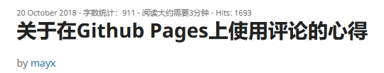
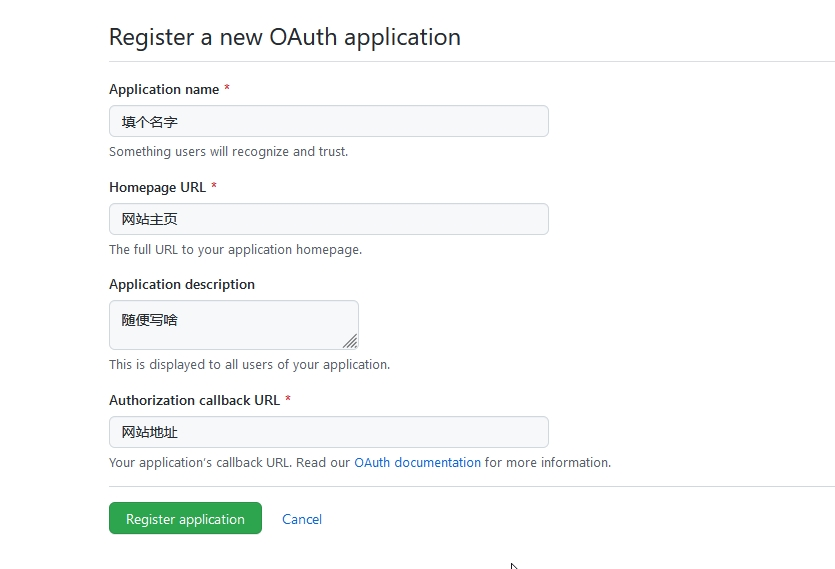

半年前的一个晚上我偶然看到了Mayx的博客
其中有一个文章吸引住了我
下面的评论插件立刻吸引住了我，因为我想搞个评论很久的
于是我立刻上Github搜索Gitalk
好像很简单啊
然后我自己试了试，不行
然后我问了问Mayx，他把原文链接发给了我，我没看明白
就这么过了半年，我又放假了，昨天晚上我又想试试Gitalk了
没想到这一次，成了！
下面我就告诉你们怎么来搞
1.去申请一个GitHub OAuth application，来让Gitalk有权限操作github上的仓库
如图
完成后会有两个东西，一个叫ClientID，另一个叫ClientSecret，这两个要记着，一会要用
在head里加入
<link rel="stylesheet" href="https://cdn.jsdelivr.net/npm/gitalk@1/dist/gitalk.css">
<script src="https://cdn.jsdelivr.net/npm/gitalk@1/dist/gitalk.min.js"></script>
<link rel="stylesheet" href="https://unpkg.com/gitalk/dist/gitalk.css">
<script src="https://unpkg.com/gitalk/dist/gitalk.min.js"></script>
然后在你想要显示评论插件位置的地方添加一个容器
<div id="gitalk-container"></div>
下面写上
<script type="text/javascript">
var gitalk = new Gitalk({
clientID: `clientID`, //上面获取到的值
clientSecret: `clientsecret`,//上面获取到的值
repo: `repositories`, //您刚才建立仓库的名字
owner: 'name', //你的GitHub用户名字
admin: ['name'], //你的GitHub用户的名字
id: 'id', //,每个页面的ID不能一样如果重复就会把其他页面的评论引进来,每个页面的ID不能一样
});
gitalk.render('gitalk-container');
这样子你的评论就会显示出来啦，也不算很难吧
这个相对来说就比较简单了
代码如下
<script>
function mytime(){
var a = new Date();
var b = a.toLocaleTimeString();
var c = a.toLocaleDateString();
document.getElementById("time").innerHTML = c+" "+b;
}
setInterval(function() {mytime()},1000);
</script>
效果就像菜单最左边一样
这个要用到天气这个网站
找到你想要的样式之后直接复制粘贴到你想要的地方就可以了
效果如下